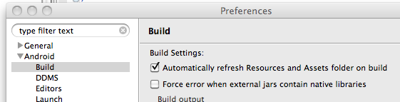

BridJ’s source code is currently hosted at the NativeLibs4Java project.
2. Download
This page explains how to get and use BridJ using various build management systems and provides platform-specific notes.
You can try BridJ quickly through JNAerator (just select "BridJ" in the "Runtime" combobox).
2.1. Get BridJ
It is advised to use Maven or sbt to manage dependencies automatically.
2.1.1. Direct downloads
-
Latest release: 0.7.0
-
Latest snapshot: 0.7-SNAPSHOT
2.1.2. Use with Maven
New releases are deployed on Maven Central, so you don’t need to declare any repository:
<dependencies>
<dependency>
<groupId>com.nativelibs4java</groupId>
<artifactId>bridj</artifactId>
<version>0.7.0</version>
</dependency>
</dependencies>If you wish to use a snapshot:
<repositories>
<repository>
<id>sonatype</id>
<name>Sonatype OSS Snapshots Repository</name>
<url>http://oss.sonatype.org/content/groups/public</url>
</repository>
<repository>
<id>nativelibs4java-repo</id>
<name>NativeLibs4Java Old Snapshots Repository</name>
<url>http://nativelibs4java.sourceforge.net/maven</url>
</repository>
</repositories>
<dependencies>
<dependency>
<groupId>com.nativelibs4java</groupId>
<artifactId>bridj</artifactId>
<version>0.7-SNAPSHOT</version>
</dependency>
</dependencies>2.1.3. Use with sbt
import sbt._
class Project(info: ProjectInfo) extends DefaultProject(info)
{
// Repository for snapshots (0.6.2-SNAPSHOT onwards)
// val sonatypeSnapshotsRepo = "Sonatype OSS Snapshots Repository" at "http://oss.sonatype.org/content/groups/public"
// Repository for old releases <= 0.6
// val nativelibs4javaRepo = "NativeLibs4Java Repository" at "http://nativelibs4java.sourceforge.net/maven/"
val bridj = "com.nativelibs4java" % "bridj" % "0.7.0"
}2.1.4. Specialized subsets (smaller JARs !)
If BridJ is too heavy for you, there are pre-packaged specialized subsets of BridJ.
You can download them manually from the Maven repository or specify the correct classifier in the Maven dependency (cf. next section).
List of prepackaged subsets
| Maven Classifier | C | C++ | Objective-C | COM | .NET | Windows (x86, x64) | MacOS X (universal) | iOS (arm) | Linux (x86, x64) | Solaris (x86) | Android (arm) |
|---|---|---|---|---|---|---|---|---|---|---|---|
empty |
x |
x |
x |
x |
x |
x |
x |
x |
x |
x |
- |
|
x |
- |
- |
- |
- |
x |
x |
x |
x |
x |
- |
|
x |
x |
- |
x |
x |
x |
- |
- |
- |
- |
- |
|
x |
x |
x |
- |
- |
- |
x |
x |
x |
x |
- |
|
x |
x |
- |
- |
- |
- |
- |
- |
x |
- |
- |
|
x |
x |
x |
- |
- |
- |
x |
- |
- |
- |
- |
|
x |
x |
x |
- |
- |
- |
- |
x |
- |
- |
- |
|
x |
x |
- |
- |
- |
- |
- |
- |
- |
- |
x |
Build your own subset
Note that you can use the Maven Shade Plugin in your own
Maven project to strip away native libraries (in the org/bridj/lib/* packages) and classes (such as COM support in org/bridj/cpp/com/*) that you don’t need.
Take BridJ’s pom as example.
2.2. Platform notes
2.2.1. Android
BridJ works partially on Android/arm emulators (with the SDK), and probably even on actual devices (untested).
Proper C++ support might require that you compile your native library with the Android NDK r5 (or more recent) or with CrystaX’s NDK, as BridJ makes some use of RTTI.
See this issue for progress info.
Including BridJ in a project
To include BridJ to an Android project, you have two options:
-
Using the Android SDK Eclipse plugin :
-
add
bridj-x.x-android.jarto your project’s classpath -
make sure to untick the "Force error when external jars contain native libraries" checkbox in the Eclipse / Android / Build preferences (otherwise it will complain that "The library x contains native libraries that will not run on the device.") 
-
| this setting is broken in the current version of the plugin, so as a workaround you’ll have to also untick the "Automatically refresh resources and assets folder on build" checkbox… Annoying ? Please let the Android devs know about it ;-) |
-
Command-line :
-
build your native library with the NDK
-
use an ant-based project (see sample below).
-
create the
libdirectory and putbridj-x.x-android.jarinside it (add any other JAR dependency there) -
add the line
jar.libs.dir=libto thebuild.propertiesfile : BridJ will be in the classpath and will be included in your program.
-
Sample of BridJ on Android
A simple sample of BridJ use on Android was derived from the NDK’s helloworld-jni sample. It is available in BridJ’s SVN repository.
Building upon the NDK’s helloworld-jni sample, you can modify the helloworld.c file as follows :
#include <string.h>
#include <jni.h>
jstring Java_com_example_hellojni_HelloJni_stringFromJNI( JNIEnv* env, jobject thiz ) {
return (*env)->NewStringUTF(env, "Hello from JNI !");
}
int addTwoInts(int a, int b) {
return a + b;
}And add the following BridJ bindings :
package com.example.hellojni;
import org.bridj.*;
import org.bridj.ann.*;
@Library("hello-jni")
public class BridJLib {
static {
BridJ.register();
}
public static native int addTwoInts(int a, int b);
}You will then be able to use BridJ transparently in your activities :
TextView tv = new TextView(this);
int a = 10, b = 100;
tv.setText(a + " + " + b + " = " + BridJLib.addTwoInts(a, b) + " (computed in BridJ-bound native function !)");2.2.4. Solaris
Only Solaris x86 is supported (test hardware would be welcome !).
C, C++ support is ok, with some issues in endianness-aware reading/writing with Pointer.
2.2.5. MacOS X
C, C++ support is ok.
Objective-C support is dramatically undertested and probably very poor. Help would be appreciated…
2.2.6. iOS (jailbroken iPhones and iPads)
BridJ’s support for iOS is not working properly yet, and relies on JamVM.
3. Current State
3.1. Working Features
-
thread-safe design (including reentrant calls)
-
JNAerator support on par with JNA’s
-
C functions calls with
__cdecland__stdcallconventions (including varargs support) -
C++ constructors, method calls and destructors (including virtual methods,
thiscallandstdcallconventions) -
C classes subclassing from Java (override virtual C methods from Java !)
-
lazy signatures annotation support (exact symbols are optional)
-
Call C callbacks from Java and call Java-implemented callbacks from C
-
Complete [Pointers] API (with typed opaque pointers, array accessible + iterable reified generic Pointer base class…)
-
Type-safe enums (ValuedEnum + FlagSet classes) : unifies singleton and multi-flags patterns
-
[COM] object creation and calls, with some support for the VARIANT type
-
lightweight and fast structs (no memory duplication nor update issues between Java and the native side), with unions and sub-structs
-
Dynamic function pointers casting (see
Pointer.asDynamicFunction) -
Enumeration of shared libraries symbols (w/ demangling) and resolution of libraries paths (including support for GNU LD scripts)
3.2. Known limitations
-
structs by value not supported yet (neither as function arguments nor as function return values)
-
requires Java 1.5 or more recent (if you need 1.4 compatibility, you shoud JNA instead)
3.3. Features in progress
-
assembly-optimized raw calls (for Win32, Win64, Mac64, Linux32, Linux64) : win64 is buggy, lin32 is TODO, mac is buggy with floats and doubles (of course, buggy implies disabled)
-
C++ templates for functions and classes (combination of generics and extra args/fields for types reification and last-minute lookup of actual symbols). Begins to work with GCC.
-
ObjectiveC methods calls (objc_msgSend) : hope to draw interest from Rococoa developers
3.4. Planned features
(also see Google Summer of Code for projects on which we’d love to receive help, from students or passionate individuals)
-
pass and return structs by value
-
C++ templates typedefs :
typedef WImageC<uchar, 1> WImage1_b;(JNAerator should create WImage1_b with the correct constructor). -
COM JNAeration : need to parse
__declspec(uuid("xxx")) -
some amount of built-in support for STL types (strings and vector at least, in debug/release mode, for GNU’s STL, STLPort and MS VC++9’s STL)
-
Full MFC Runtime (with annotations-based message map creation)
-
Mono/CLR interop (see my previous hack)
-
MS/.NET interop
-
reverse-engineering helper (struct sizes guesses can be eased up a bit, and there’s already a good demangler)
4. Project
4.1. Design
JNA made it trivial to access to native libraries from Java. Together with JNAerator, it effectively lowered the entry cost of native developments, when compared to JNI.
However, JNA was designed in the pre-Java 1.5 era and has made some design choices that hinder both performance and usability.
BridJ was written from scratch to replace JNA with both performance and usability as golden objectives (as well as support for C and ease of conversion from C to Java).
Performance:
-
Lightweight structs : no data duplication nor synchronization issues
-
Pervasive "direct" mode (heavy use of "native" Java methods)
-
Assembler-optimized calls in some simple cases on select plaforms (see details below)
Usability :
-
BridJ & Pointers class behaves pretty much like C pointers (automatic translation is trivial)
-
BridJ & Type Mapping#Enums are typed while letting users combine them as flags
-
BridJ & CPP: Create a C++ object with
new MyCPPObject(), subclass it withnew MyCPPObject() { public void myOverriddenMethod() {} }… -
BridJ & Type Mapping#Structs have chainable setters :
new MyStruct().a(10).b(12)
4.1.1. Assembler optimizations
These optimization are turned on when all conditions are met, which might be rarely or never (please read http://code.google.com/p/jnaerator/wiki/Reification][for how to generate optimizable and OO-looking methods out of plain old C functions).
Without these optimizations, BridJ’s performance is about the same as JNA in direct mode (without structs, where BridJ is much faster). With the optimizations, BridJ is about 10% slower than pure JNI, that is 5x faster than JNA in direct mode.
Supported cases
Concerns only the native C functions with primitive arguments that match the platform’s size.
Supports calls with a maximum number of arguments that depends on the platform (typically, 4).
Supported platforms : * MacOS X 64 bits * Linux 64 bits * Windows 32 bits * Windows 64 bits (currently disabled)
Examples
Example of optimizable functions :
public static native int f(long a, short b, int c);
// long primitive tagged as a pointer : optimized on 64 bits platforms only
public static native int fWithPointer(@Ptr long p);Examples of non-optimizable function :
// p is not a primitive :
public static native int fWithPointer(Pointer<?> p);
// most supported platforms support optimization of up to 4 arguments :
public static native int fTooManyArgs(long a, short b, int c, int d, int e, int f, int g, int h, int i);4.2. BridJ & Pointers
4.2.1. Anatomy of a pointer
Please read through the Pointer class’s Javadoc.
In BridJ, each pointer exposes the following data:
-
a peer, which is the long value of the memory address it points to. It is never equal to zero (the NULL pointer is represented with the Java null value).
-
a target type, which is null for
Pointer<?>instances and Integer.class forPointer<Integer>instances. -
a byte order (as for NIO buffers), which states whether data will be read from this pointer in big endian or little endian mode
4.2.2. Reading / Writing data
Pointer<Integer> pInt = ...;
int v = pInt.get(); // generic way of getting the pointed element
v = pInt.getInt();TODO
4.2.4. Wrapping memory
Wrapping a direct NIO buffer:
ByteBuffer b = ByteBuffer.allocateDirect(10);
Pointer<Byte> p = pointerToBytes(b); // will keep a reference to b so it's not garbage-collected before p.Wrapping a raw native address (when you have no other choice):
long someAddress = ...;
Pointer<?> p = pointerToAddress(someAddress);
Pointer<Integer> pInts = pointerToAddress(someAddress, Integer.class); // if you known the memory location contains integers
Pointer<MyStruct> pInts = pointerToAddress(someAddress, MyStruct.class); // if you known the memory location contains one or more structs4.2.5. Memory bounds, offsets, iteration
Offsets
In C, one can increment a pointer with ptr++. The expression ptr + x, where x is an integer, gives a pointer to the same memory location as ptr shifted by x elements.
If ptr is an int pointer, the address pointed by ptr + 1 is the address pointed by ptr plus 4 bytes.
With BridJ, given a pointer ptr, one can get ptr + 1 with ptr.next(1).
The method ptr.offset(1) shifts the pointer by 1 byte, whereas ptr.next(1) shifts the pointer by 1 element (4 bytes if the target type of the pointer is Integer).
Take the following C++ code fragment:
int* array = new int[10];
int* ptr = array;
for (int index = 0; index < 10; index++, ptr++)
printf("%i\n", *ptr);
delete[] array;Here is an equivalent in Java:
import static org.bridj.Pointer.*;
...
Pointer<Integer> array = allocateInts(10);
Pointer<Integer> ptr = array;
for (int index = 0; index < 10; index++) {
System.out.println("%i\n".format(ptr.get()));
ptr = ptr.next();
}
array.release(); // optionalNote that we could iterate directly on the pointer:
for (int value : array)
System.out.println("%i\n".format(value));Bounds
Memory allocated from Java using Pointer.allocateXXX and Pointer.pointerToXXX methods has known valid bounds.
Pointers that wrap direct NIO buffers also have known valid bounds that they take from the buffer.
Read/write operations on such "bounded" pointers are bounds-checked and throw exceptions when indexes are out of bounds:
import static org.bridj.Pointer.*;
...
allocateInt().getLong(); // will throw: allocated an int = 4 bytes, reading a long = 8 bytes
allocateShort(3).get(3); // will throw: allocated 3 shorts, reading short at index 3
allocateInts(2).next(1).get(-1); // will not throw: allocated 2 ints, offsetting a pointer by 1 element and reading the element before (nulling the offset)It is possible to ask a pointer how many valid bytes are available from its pointed location:
Pointer<Short> p = allocateShorts(4); // allocate 4 * 2 bytes = 8 bytes
System.out.println(p.getRemainingBytes()); // 8
Pointer<Short> p2 = p.next(); // shift pointer by 1 short = 2 bytes.
System.out.println(p2.getRemainingBytes()); // 6Iteration
One can iterate over a pointer:
Pointer<Integer> pInts = pointerToInts(1, 2, 3, 4, 5);
for (int v : pInts)
System.out.println(v);If the pointer’s bounds are unknown, iteration will be infinite (until illegal memory access is attempted, which will most likely crash the JVM).
One case where we don’t know bounds yet want to iterate, though, is for C string length computation:
long length = 0;
Pointer<Byte> pString = ...;
for (byte c : pString) {
if (c == 0)
break;
else
length++;(note that you can read a C string from a pointer with the method Pointer.getCString())
4.2.6. Typed pointers
A typed pointer is a subclass of the Pointer<?> class that corresponds in C to some void pointer or opaque pointer typedef:
typedef void* HWND;
typedef struct _S* S;TODO
4.2.7. Endianness
With the method Pointer.order(ByteOrder), it is possible to create a clone of a pointer that uses a different byte order to read and write to / from memory.
4.3. BridJ & Callbacks
BridJ has full support for callbacks. You can pass a callback object to a native function allowing the library to call back to Java. You can also receive function pointers from the native code, and call into the library through it.
4.3.1. The Callback type
A function pointer type is represented by an abstract subclass of org.bridj.Callback in Java code. It has a single abstract function that mirrors the signature of the native function:
public static abstract class CallbackType extends Callback<CallbackType> {
public abstract int apply(Pointer<Byte> buffer, int length);
}If you receive a function pointer, it will be a Pointer<CallbackType> object; you can access the actual callback with the Pointer.get()
function and then call apply. To pass a callback to a native function, extend the abstract class, provide an implementation to the apply method,
and wrap instances of this callback object in a pointer using Pointer.pointerTo.
CallbackType actualCallback=new CallbackType() {
public int apply(Pointer<Byte> buffer, int length) {
System.out.format("Received %d bytes%n", length);
return 0;
}
}| if the native code stores your callback, you need to make sure that the Java callback object is not garbage collected while the native code uses it, otherwise your program will crash. You can use BridJ.protectFromGC and BridJ.unprotectFromGC for this purpose: |
MyLibrary.registerCallback(Pointer.pointerTo(actualCallback));
BridJ.protectFromGC(actualCallback);
// when it is time to stop the native code from using the callback
MyLibrary.unregisterCallback(Pointer.pointerTo(actualCallback));
BridJ.unprotectFromGC(actualCallback);4.3.2. Complete example
Native header:
typedef int (*CallbackType)();
void callMe(CallbackType);
CallbackType getNativeCallback();Java bindings (generated by JNAerator):
import org.bridj.BridJ;
import org.bridj.CRuntime;
import org.bridj.Callback;
import org.bridj.Pointer;
import org.bridj.ann.Library;
import org.bridj.ann.Runtime;
@Library("CallbackTest")
@Runtime(CRuntime.class)
public class CallbackTestLibrary {
static {
BridJ.register();
}
public static abstract class CallbackType extends Callback<CallbackType > {
public abstract int apply();
};
public static native void callMe(Pointer<CallbackTestLibrary.CallbackType > CallbackType1);
public static native Pointer<CallbackTestLibrary.CallbackType > getNativeCallback();
}Using the library:
import org.bridj.Pointer;
public class Main {
public static void main(String[] args) throws Exception {
// call a callback function received from the library
System.out.println("C callback returned " + CallbackTestLibrary.getNativeCallback().get().apply());
// create a callback function in Java
CallbackTestLibrary.CallbackType callback = new CallbackTestLibrary.CallbackType() {
@Override
public int apply() {
System.out.println("Java callback called");
return 175;
}
};
// pass a callback function to the library
CallbackTestLibrary.callMe(Pointer.pointerTo(callback));
}
}Implementation of the native library:
#include "CallbackTest.h"
#include "stdio.h"
void callMe(CallbackType c) {
printf("Java code returned %d\n",c());
fflush(stdout);
}
int prCb() {
printf("Native function called\n");
fflush(stdout);
return 56;
}
CallbackType getNativeCallback() {
return &prCb;
}For this example the Java program prints the following:
Native function called C callback returned 56 Java callback called Java code returned 175
4.4. Binaries lookup
4.4.1. External binaries
Lookup paths
BridJ needs to know where to find binaries.
Depending on the platform, the following environment variables are used as lookup paths :
-
PATH(Windows) -
LD_LIBRARY_PATH(Unix / Linux) -
DYLD_LIBRARY_PATH(Darwin / MacOS X)
The following Java properties are also used :
-
java.library.path -
gnu.classpath.boot.library.path
Finally, the following paths are used :
-
. -
${java.home}/bin -
${java.home}/../Librarieson MacOS X
Additional paths can be added programmatically with BridJ.addLibraryPath.
Explicit paths
For a given library with name Xyz, BridJ uses the environment variable BRIDJ_XYZ_LIBRARY or the property bridj.Xyz.library for explicit full path of the library binary file (beware : case-sensitive names !)
An explicit library file can also be set programmatically with http://nativelibs4java.sourceforge.net/bridj/api/stable/org/bridj/BridJ.html#setNativeLibraryFile(java.lang.String, java.io.File)[BridJ.setNativeLibraryFile].
Library aliases and actual name
The actual name of a library might be platform-dependent.
For instance the "C" library is actually named mscvrt.dll on Windows. This is supported by BridJ through <a href="http://nativelibs4java.sourceforge.net/bridj/api/stable/org/bridj/BridJ.html#setNativeLibraryActualName(java.lang.String, java.lang.String)">BridJ.setNativeLibraryActualName</a>.
Likewise, you can define aliases for libraries with http://nativelibs4java.sourceforge.net/bridj/api/stable/org/bridj/BridJ.html#addNativeLibraryAlias(java.lang.String, java.lang.String)[BridJ.addNativeLibraryAlias].
4.4.2. Binaries embedded in JARs
Embedded resources are extracted from paths of the form :
embeddedResourceRoot / platformName / binaryName
Details on each part of this path are in the following sub-sections :
Embedded resource roots
Predefined embedded resource roots are lib and org/bridj/lib.
Additional resource roots can be added with Platform.addEmbeddedLibraryResourceRoot.
Binary names
Binary name for library Xyz will be libXyz.so, libXyz.dylib, Xyz.so or Xyz.dll depending on the platform.
Platform names and example resource paths
Platform names are as follows :
Platform name |
Platform description |
Example resource path for library |
|
Window x86 (32 bits) |
|
|
Window x64 (64 bits) |
|
|
Linux x86 (32 bits) |
|
|
Linux amd64 (64 bits) |
|
|
Linux arm32 hard-float |
|
|
Solaris x86 (32 bits) |
|
|
MacOS X (x86 / x64 / ppc) |
|
Please see BridJ’s sources for an up-to-date list of platform names.
The exception is Android, where the only embedded resource root is 'lib' :
Platform name |
Plarform description |
Example resource path for library |
|
Android arm |
|
4.4.3. Dependent libraries
If a shared library depends on another one, it may be useful to declare the dependencies upfront so that BridJ is able to extract and load them before your library:
@Library(value = "MainLib", dependencies = { "Dependency1", "Dependency2"... })You can also declare these dependencies dynamically with BridJ.addNativeLibraryDependencies:
// "MainLib.dll" / "libMainLib.so" / "libMainLib.dylib"...
@Library("MainLib")
class MainLib
static {
// Ensure "Dependency1/2.dll" / "libDependency1/2.so" are loaded before "MainLib.dll" / "libMainLib.so".
BridJ.addNativeLibraryDependencies("MainLib", "Dependency1", "Dependency2");
BridJ.register();
}
...
}4.4.4. JNAerator support
JNAerator can bundle embedded binaries for all architectures (with repeated -arch command-line flags) and even deal with dependent libraries (with -dependencies flags). See JNAerator flags help.
Also see this Stack Overflow question for an example of bundling cross-platform binaries (TODO expand some doc here)
4.5. BridJ & Type Mapping
If it’s a pointer, it’s a Pointer!
With BridJ, mapping was kept to its simplest form: if a type is a pointer, it will be mapped to org.bridj.Pointer in Java (or to a subclass of it). This is very different from JNA where there are many possible mappings for the same native type.
|
Java/BridJ |
JNA |
|
|
|
|
|
|
|
|
|
|
|
|
|
|
|
|
|
|
|
|
|
Note that while NIO buffers are not allowed in bindings (Pointer<Integer> must be used rather than IntBuffer, unlike with JNA),
it is trivial to create pointers out of buffers (see Pointer.pointerToBuffer(Buffer), Pointer.pointerToInts(IntBuffer)…) and the other way around (Pointer.getBuffer(), Pointer.getIntBuffer()…).
Please make sure to also read the FAQ.
4.5.1. Structs
BridJ structs were designed to be performant and easy to use.
Using JNAerator to create them out of C definitions is strongly advised.
C code:
struct S {
int a;
void* p;
};
void funVal(struct S byVal);
struct S myStruct;
struct S* pS = &myStruct;
funVal(myStruct);
funVal(*myStruct);Equivalent Java/BridJ code:
// Generated by JNAerator:
public static class S extends StructObject {
public S() { super(); }
public S(Pointer pointer) { super(pointer); }
@Field(0)
public int a() {
return this.io.getIntField(this, 0);
}
// BridJ setters return this to allow invocation chaining
@Field(0)
public S a(int a) {
this.io.setIntField(this, 0, a);
return this;
}
@Field(1)
public Pointer<? > p() {
return this.io.getPointerField(this, 1, ?.class);
}
@Field(1)
public S p(Pointer<? > p) {
this.io.setPointerField(this, 1, p);
return this;
}
};
import static org.bridj.Pointer.*;
S myStruct = new S(); // maybe chained with setters: new S().a(10).b(12).c(55);
Pointer<S> pS = pointerTo(myStruct);
funVal(myStruct);
funVal(pS.get()); // pointer is a reified generic class, so get() returns a correct S instance4.5.2. Enums
typedef enum SimpleEnum {
First = 0,
Second = 10,
Last = 11
} SimpleEnum;Enums don’t mean the same in Java and C/C++.
-
In Java, an enum item is a singleton subclass of the enum class. It has no associated value besides its index within the list of enum items but is a real class and can implement interfaces and define new fields / methods
-
In C/C, enums are just typed integers (in C they’re not restricted to int), so you can combine them with bitwise operators
&,|,^,!…
This means that we’d like to benefit from the enum / singleton Java pattern and still be able to pass multiple values to C code expecting enums.
In BridJ, this is made possible with the ValuedEnum<E> interface (and IntValuedEnum<E> subinterface):
// Generated by JNAerator:
public enum SimpleEnum implements IntValuedEnum<SimpleEnum > {
First(0),
Second(10),
Last(11);
SimpleEnum(long value) {
this.value = value;
}
public final long value;
public long value() {
return this.value;
}
public Iterator<SimpleEnum > iterator() {
return Collections.singleton(this).iterator();
}
public static IntValuedEnum<SimpleEnum > fromValue(int value) {
return FlagSet.fromValue(value, values());
}
};
public static native void doSomething(IntValuedEnum<SimpleEnum> value);
import static SimpleEnum.*;
public void test {
doSomething(First);
// Pass ORed flags: 'First | Value'
doSomething(SimpleEnum.fromValue(First.value() | Second.value()));
}4.5.3. Callbacks
void performTask(void(*monitor)(int currentProgress));BridJ equivalent:
// Generated by JNAerator:
public static abstract class performTask_monitor_callback extends Callback<performTask_monitor_callback > {
public abstract void apply(int currentProgress);
};
public static native void performTask(Pointer<CallbackTestLibrary.performTask_monitor_callback > arg);For further details, see BridJ & Callbacks.
4.5.4. C++ Class
C++ code (compiled in test.dll / libtest.dylib / test.so):
class MyClass {
public:
virtual ~MyClass();
int someMethod();
virtual int someVirtualMethod();
};
void test() {
MyClass inst;
inst.someMethod();
}BridJ equivalent:
public class Example {
// Generated by JNAerator:
@Library("test")
public static class MyClass extends CPPObject {
public MyClass() { super(); }
public MyClass(Pointer pointer) { super(pointer); }
@Virtual(0)
public native void MyClassDestructor();
public native int someMethod();
@Virtual(1)
public native int someVirtualMethod();
};
public static void test() {
MyClass inst = new MyClass();
inst.someMethod();
}
}4.6. Backwards compatibility
BridJ is still a young project and its API is bound to evolve still a lot before version 1.0 is out.
However, most of its features are already usable (and used) in production, so backwards compatibility is a growing concern for our users.
4.6.1. Note on dependencies
BridJ has very few dependencies.
Amongst them, ASM was reported not to be backwards-compatible, so in BridJ its packages have been relocated from org.objectweb.asm. to org.bridj.relocated.org.objectweb.asm..
If the same issue was ever to come up with another dependency of BridJ, please let us know and we’ll sort it out ASAP !
4.6.2. BridJ’s pre-1.0 API: a moving target
In order to improve the usability of BridJ’s API (and sometimes to support new features), some backwards-incompatible changes have been made in past versions and might be done in future ones.
Example of past API breaking change
An example of such breaking change is the methods Pointer.getInt(long) (respectively getLong, getShort…) that were renamed to Pointer.getIntAtOffset(long) (resp. getLongAtOffset, getShortAtOffset…).
This change was done to avoid inevitable confusion between Pointer<Integer>.get(long) which argument is expressed in number of integers, and Pointer<Integer>.getInt(long) which argument was expressed in number of bytes : this behaviour is now explicit in the name of the new Pointer<Integer>.getIntAtOffset(long), avoiding lots of head-scratching from future users and cutting support costs down.
4.6.3. What if you need backwards-compatibility from BridJ ?
These backwards-incompatible changes can however become a huge issue for users whose libraries are likely to coexist in the same applications with other BridJ-dependent libraries that use different versions of BridJ.
BridJ’s version-specific repackaged artifact
This is a feature still in development, should be stable by the release of 0.7.
BridJ now has an experimental version-specific packaged artifact available with the "version-specific-packages" classifier :
<dependency>
<groupId>com.nativelibs4java</groupId>
<artifactId>bridj</artifactId>
<version>0.7-SNAPSHOT</version>
<classifier>version-specific-packages</classifier>
</dependency>In this artifact, the org.bridj package is renamed to org.bridj.v0_7 : this requires an update of all the import clauses in client source code but guarantees there won’t be any version collision with other versions of BridJ in the classpath.
Maven-based workaround
If you need a different classifier from BridJ (say, "c-only"), we advise you to relocate BridJ’s packages yourself with the Maven Shade Plugin using a configuration such as the following :
<build>
<plugins>
<plugin>
<groupId>org.apache.maven.plugins</groupId>
<artifactId>maven-shade-plugin</artifactId>
<version>1.4</version>
<configuration>
<relocations>
<relocation>
<pattern>org.bridj</pattern>
<shadedPattern>org.bridj.v0_7</shadedPattern>
</relocation>
</relocations>
</configuration>
</plugin>
</plugins>
</build>5. Language Specific
5.1. BridJ & CPP
Also read Current State and BridJ & Type Mapping for more details.
5.1.1. Example of C++ class
Let’s use the following C++ class throughout this page :
#ifdef _WIN32
# ifdef TEST_EXPORTS
# define TEST_API __declspec(dllexport)
# else
# define TEST_API __declspec(dllimport)
# endif
#elseif
# define TEST_API
#endif
class TEST_API TestClass {
public:
virtual ~TestClass();
virtual int testVirtualAdd(int a, int b);
};Its BridJ bindings are easy to write, but it is advised to use JNAerator to create them, nevertheless :
import org.bridj.*;
import static org.bridj.Pointer.*;
public static class TestClass extends CPPObject {
@Virtual(0)
public native int testVirtualAdd(int a, int b);
};5.1.3. Language support
Supported features
-
Creating C++ class instances :
TestClass test = new TestClass(); Pointer<TestClass> pTest = pointerTo(test);
-
Calling C++ methods (including virtual and static ones, varargs) :
int result = test.testVirtualAdd(1, 2);
-
Experimental support for C++ class templates (JNAerator is not yet compatible with this feature, so you’ll have to write the template bindings by hand for now ; see CPPTemplateTest)
-
Subclassing C++ classes from Java, with virtual methods overrides : And you can now derive from
TestClassin Java very naturally :
TestClass test = new TestClass() {
@Override
public int testVirtualAdd(int a, int b) {
return a + b;
}
};The only known limitation so far is that you cannot call super.testVirtualAdd from the overridden method yet (but this is worked on and should be possible in the next release).
5.2. BridJ & C
Please see Current State.
BridJ supports functions, callbacks (Java to native, native to java), enums, pointers, structs, globals…
See BridJ & Type Mapping for more information.
5.3. BridJ & Scala
BridJ was designed with JNAerator in mind, so that you never have to translate any C / C++ / ObjectiveC header by hand.
JNAerator creates Java sources or classes, that can then be used seamlessly from Scala.
However, BridJ has some Scala-specific features in its core classes, and JNAerator has Scala-specific generation modes.
This page details these Scala-oriented features.
5.3.1. Pointer
BridJ’s pointer class was designed to behave
like a list, so provided you import scala.collection.JavaConversions._ you’ll be able to iterate over its pointed elements.
It also implements apply and update, so indexed access can be made with the natural Scala syntax :
val value = pointer(index) pointer(index) = value
C code that demonstrates multi-dimensional arrays declarations and usage: |
Scala code : |
Java code : |
5.3.2. Structs
When using JNAerator to create BridJ structs, you can use the -scalaSetters switch to generate setters in the form MyStruct.myField_= that are treated like setters by Scala.
These setters do not replace the usual generated setters, they’re final and just call the usual setters.
C struct and code: |
Scala code : Scala code (using setters) : |
Java code : |
5.4. COM
COM defines interfaces and registers implementations of these interfaceS.
Interfaces are identified by their IID, and implementations are registered in the COM runtime using their CLSID.
In most cases with BridJ you don’t need to know more about COM internals.
5.4.1. Example
@IID("56FDF342-FD6D-11D0-958A-006097C9A090")
public class ITaskbarList extends IUnknown {
@Virtual(0) public native void HrInit();
@Virtual(1) public native void AddTab(Pointer<Integer> hWnd);
@Virtual(2) public native void DeleteTab(Pointer<Integer> hWnd);
@Virtual(3) public native void ActivateTab(Pointer<Integer> hWnd);
@Virtual(4) public native void SetActiveAlt(Pointer<Integer> hWnd);
}6. Who’s using BridJ
Please keep in mind that Credits and License BridJ is licensed under the BSD license, so anyone using it must state it appropriately in the documentation and/or other distributed materials (but there’s no need to publish any modified sources, although it is good practice ;-)).
Here are some of the projects known to use BridJ internally (please post on the mailing list if you’d like your project to be listed here):
6.1. StormMQ Myxi
StormMQ Myxi is the world’s first Message Queue as a Service using AMQP 1-0.
We decided to use BridJ as it is the only professionally-supported, efficient product available today to seamlessly integrate essential C functionality with Java. Olivier Chafik, the main developer, provides first-class support and deep technical understanding.
We’ve successfully mapped gnu libc and libpthread to allow us more fidelity and functionality on linux and work round Java’s limitations with memory mapped files. "
6.2. directx4java
DirectX4Java is a port of DirectX 10 and 11 for Java (MIT-licensed) written by Evandro Millian.
It recently switched from JNA to BridJ to power its low-level COM interoperability.
6.3. jlibav
This library provides an access to a big part of the Libav functions via BridJ. It is compatible with all Libav binaries since version 0.7. The goal of this project is to cover complete functionality of the Libav.
| the Libav binaries are not a part of this library |
6.4. OpenIMAJ
Open Intelligent Multimedia Analysis toolkit for Java (OpenIMAJ, BSD-licensed) is a collection of libraries for multimedia analysis, focusing on state of the art and highly scalable (multithreaded + distributed) image analysis and feature extraction. It was written by Jon Hare, Sina Samangooei and David Dupplaw.
It uses BridJ in its 'openimaj-serial-driver' and 'core-video-capture' modules.
6.5. webcam-capture
sarxos/webcam-capture is a generic Webcam capture utility (cross-platform, multi-drivers).
It uses BridJ for its built-in drivers.
6.6. hunspell-bridj
HunspellBridJ: bindings for the Hunspell library for Java, using BridJ.
6.7. BridJ PCap
BridJ PCap (LGPL-licensed) is a library written by Andrei Sochirca that provides network packet capture functionality.
6.8. GeoTools
GeoTools is an open source Java library that provides tools for geospatial data.
It uses BridJ to bind the OGR library.
6.9. falplayer-android-j
falplayer-android-j (MIT-licensed) is the Java version of Atsushi Eno's Ogg Vorbis music player for Android (see original version : falplayer).
It features BridJ-powered libvorbisidec / Tremolo bindings.
6.10. JavaCL
It switched to BridJ for its low-level bindings (legacy JNA version is still available for download).
JavaCL is also used by other projects, which hence make indirect use of BridJ.
6.11. ScalaCL
ScalaCL (BSD-licensed) is an optimizing Scala compiler plugin + GPU-backed collections.
It uses the BridJ port of JavaCL.
7. Contributing to BridJ
BridJ now has some contributors as well as many bug reporters.
Any further help will be highly welcome !
You can help in many ways :
-
report bugs
-
suggest / write documentation
-
investigate open bugs
-
submit patches / pull requests for fixes or new features
-
help users on the mailing list or on StackOverflow
If you wish to contribute code, you’ll want to have a look at the Build page.
In any case if you don’t know where to start, please ask on the mailing list.
8. How to help
BridJ is an ambitious project that aims at becoming the ultimate free interop library for Java (free as in freedom and beer : [CreditsAndLicense BSD-licensed]).
BridJ and JNAerator are mainly developed by a single individual but they also have a handful of occasional committers and received [CreditsAndLicense many contributions] in the form of bug reports and suggestions.
Even if you’re not a programmer you’re welcome to contribute to these projects, and we’ll be happy to help you with your contribution.
This page details some ways you can help us.
If any item rings a bell, let’s discuss it.
8.1. New projects
See Google Summer of Code for details on some ambitious sub-project that will likely not see the light of day without your help.
8.2. Bug Fixes and Enhancements
There are many issues, just waiting for you.
8.4. Money or Hardware donations
BridJ is developped, debugged and built on different CPU architectures and different operating systems (Windows 32/64, Linux x86/x64, MacOS x86/x64/ppc).
What refrains me from porting it to Solaris (sparcv8, sparcv9) or FreeBSD is I don’t have the appropriate hardware and / or system administration knowledge. If you do, please help by sending me hardware and / or advice.
In the case of hardware lending, I can guarantee return of the hardware if we negociate the associated costs.
9. Submitting Bugs
If you face what appears to be a bug in BridJ, [CreditsAndLicense we]'d be very grateful if you could try and report it on the bug tracker : NativeLibs4Java’s BridJ Bug Tracker
Of course, we'd recommend that you first look at the open bugs (and if you’re not using the latest snapshot version of BridJ, that you also look at the bugs recently closed) to see if an issue similar to yours has already been reported.
Please use NativeLibs4Java’s GitHub Issues to report bugs and request enhancements with a title starting by BridJ: …
9.1. What should go in an ideal report
To maximise the chances we can fix the issue and/or help you quickly, please make sure to provide all of the following items in the report :
-
Minimum-sized working code that exhibits the issue : any of the following :
-
a class with a static main method that compiles directly against BridJ’s JAR (you might want to Build and just drop your
.javafile tosrc/main/java, to have it compiled an run withmvn compile exec:java -Dexec.mainClass=yourClass) -
a JUnit test class that can just be dropped into BridJ’s test sources
-
an archive of a project that compiles easily with Maven or Ant In particular, please make sure to include the source code of your BridJ bindings. If you’ve used JNAerator without the -noComp and -noJar options, the sources of the generated bindings are located in the generated JAR, alongside the .class files.
-
-
Instructions on how to run your code :
-
full command-line
-
prequisites :
-
native library to install manually ?
-
specific hardware ?
-
other dependencies (direct links and/or exact version numbers, please !)
-
-
-
The full error log of BridJ :
-
Set the
BRIDJ_VERY_VERBOSE=1environment variable prior to running your program / test class -
Any
hs_err_pidXXX.logfiles -
In case the program never ends (hangs with no normal reason), run
jconsoleand include a dump of the execution trace of the main thread (or of all of them)
-
-
A direct link to the native library targeted by your bindings, if possible and if needed to reproduce the issue
-
The full C/C++/Objective-C headers of the native library
-
The exact JNAerator arguments you’ve used to generate your bindings, if you’ve used that tool (which is highly advised !)
Also, please do not use fancy archive formats (stick to plain old .zip), and if you have only a handful of files without particular directory hierarchy, you can even attach these files separately (this way they’ll be readable separately from an iPhone).
Anyway if you’re in doubt, please come and ask on the mailing-list :-)
10. Google Summer of Code
BridJ is a young project that opens many doors in the Java interop world, but exploring all these doors will require a lot of help.
We describe here some of the projects on which we would love to mentor students or passionate individuals, should they be sponsored through the Google Summer of Code program or not.
Please also see the [CurrentState] page for a list of features either in progress or planned, and the [HowToHelp] for more general ideas on how to help the BridJ / NativeLibs4Java / JNAerator projects.
10.1. Objective-C support
BridJ currently does not have any working Objective-C support.
The Rococoa project did an awesome job of binding the Objective-C runtime, building on JNA.
It would be feasible to do the same with BridJ (i.e. do a port of Rococoa from JNA to BridJ), but BridJ itself will need some work (it might not be dynamic enough).
10.2. Library interceptor generator
Library calls interception is a (hacking) technique that consists in hooking to all the calls to a existing function from a shared library. This allows for logging, behaviour altering, etc…
There are some system-dependent dynamic approaches, but here we could provide a static approach : we could generate a shared library (or generate the code to compile and link such a library) that would "shadow" the actual library (would appear first on the path), would expose the same public symbols and would actually call Java callbacks for each function, letting the function decide to call the actual library or just handle the call the way it wants.
This internship would require writing a code generator based on JNAerator.
Possible steps :
-
test this technique using a test library and a test hand-written shadow library. Forward the calls to Java using JNI and validate the approach
-
get used to JNAerator’s internals, write code generation engine to create the shadow definitions
-
use the excellent Dyncall native cross-platform build scripts (used by BridJ) to make the compilation of generated shadow libraries very easy (or even automatic, provided that the necessary build tools are detected locally)
Final result :
java -jar shadow.jar mydll.dll
Will output shadow\mydll.dll and shadow\mydll.jar : the JAR contains the hook interfaces and structure definitions in the org.bridj.shadow.mydll package, and the DLL should be put in the path before the actual DLL (but the actuall DLL must also be present in the path, so the shadow DLL can call it).
Setting the -Dorg.bridj.shadow=log Java property will install a logging hooks that will output logging data with function name, argument values (including dump of structures if applicable), return values, timestamp…
10.3. JNA to BridJ Converter
Using the Eclipse compiler API (also see here), one could create a Java code converter between JNA and BridJ client code to convert existing JNA bindings to BridJ bindings (please note that with JNAerator it is trivial to create BridJ bindings from scratch, though).
As JNA does not use generics and BridJ does, some amount of type inference will be needed, and in general pattern matching on the Java DOM will be used.
The code rewrite logic could be generalized, maybe using a Scala DSL or some sort of rewrite template matching / replacement grammar.
10.4. BridJ / .NET
A Java to Mono proof-of-concept binding was done some while ago, using the Mono C API.
Here, we’re targetting the Microsoft .NET runtime, which does not have such a clean C API. Hence, we need to write one :-)
Using the BridJ modular architecture, the ultimate goal is to have C# / CLR classes that look and behave like Java classes, including with respect to subclassing.
Dark points are around mixed GC interaction (GC from the JVM vs. .NET GC), crossed inheritance and bridge performance.
10.5. C++ to Java Converter (STARTED)
JNAerator converts C / C++ signatures to Java bindings.
The next step is to also convert the code (not only the signatures), so that one can bind a whole library and convert all of its samples and demos directly to Java / BridJ.
The JNAerator parser will require fixes to support the C / C++ syntax completely, and some pattern matching on its DOM will be needed to convert to proper Java / BridJ constructs.
WORK HAS BEGUN, WITH AMAZING RESULTS… STAY TUNED !
10.6. New C++ / JVM Language
This is a other approach to the C++ / Java interoperability problem.
On the model of Microsoft’s http://en.wikipedia.org/wiki/C%2B%2B/CLI[C/CLI language], which retains full C compatibility while adding support for .NET/CLR objects manipulation, one could add JVM objects creation to C++.
This is a big project that can be split in more than one internships.
Here are its milestones :
-
Add support for the C/CLI syntax subset needed to manipulate JVM objects (for instance, supporting the out or ref C/CLI keywords makes no sense) to JNAerator or LLVM (one could even JNAerate bindings for LLVM so as to pilot it from Java)
-
Create a code generator that will read the C/JVM code and output two files : one with pure C code (to be then compiled with GCC or Microsoft Visual C using dyncall's build scripts) and one with pure Java code. The pure C code will call the Java code using JNI.
-
Create line mappings between the original code and the generated code (both in Java and in C), use ASM to alter the Java code and insert "fake" line information that traces back to the original C / JVM files, so that debuggers can follow the code execution in the original files.
-
Plug into Visual C's debugger API and into GDB to provide a Java Debugging API implementation that will allow mixt debugging : stepping into both native and Java code, as what Microsoft provides with C/CLI.
As Java has no value types (besides primitives), we could even allow the dot notation to be used instead of the arrow notation when calling methods or referencing fields of Java references.
Using some or all of the C++0x’s new syntaxes (such as the new auto keyword :
using namespace java::util;
using namespace java::io;
using namespace java::lang;
List<String^>^ GetNames() {
List<String^>^ list = gcnew List<String^>();
list->add(gcnew String("First"));
list->add(gcnew String("Second"));
list->add(gcnew String("Third"));
for each (String^ s in list) {
System::out->println(s);
}
}10.7. Add Fortran support
Fortran has different official versions (F77, F90…) many compilers (each supporting its own Fortran feature set) and presumably different calling conventions.
Calling Fortran to Java might hence not be trivial.
As for C++, one should restrict the scope of the project to the most common compiler(s), say GNU Fortran (gfortran).
Support for the most common Fortran types is also important, and an excellent deliverable would be a fully functional binding to a Fortran LAPACK library from Java (there are already tons of such libraries, but I believe they’re either translated to C or have C wrappers).
11. Build
BridJ is built as part of the NativeLibs4Java sub-projects.
11.1. Build BridJ only
This section will guide you through the build of BridJ.
If you start hacking it (wanna fix some bugs?), you might also want to read the next sections about how to build other NativeLibs4Java projects that depend on BridJ, and how to rebuild BridJ’s native libraries.
-
First, install Maven 3.x
-
Please make sure you’ve set the git autocrlf option to true :
git config --global core.autocrlf true
-
Fork and/or clone the NativeLibs4Java Github repository
git clone git://github.com/ochafik/nativelibs4java.git
-
Go to the libraries/BridJ folder :
cd nativelibs4java cd libraries cd BridJ
-
Run the following Maven command :
mvn clean install -DskipTests
-
Optional: You can also rebuild BridJ’s native libraries (libbridj.so / .dylib / .dll and libtest.so / .dylib / .dll) : see instructions below
BridJ’s JARs are in Bridj/target (pick bridj-x.x-SNAPSHOT.jar if you don’t have specific size needs).
JAR File |
C |
C++ |
Objective-C |
COM |
MFC |
.NET |
Windows (x86, x64) |
MacOS X (universal) |
Linux (x86, x64) |
Solaris (x86) |
Android (arm) |
|
x |
x |
x |
x |
x |
x |
x |
x |
x |
x |
- |
|
x |
- |
- |
- |
- |
- |
x |
x |
x |
x |
- |
|
x |
x |
- |
x |
x |
x |
x |
- |
- |
- |
- |
|
x |
x |
x |
- |
- |
- |
- |
x |
x |
x |
- |
|
x |
x |
- |
- |
- |
- |
- |
- |
x |
- |
- |
|
x |
x |
x |
- |
- |
- |
- |
x |
- |
- |
- |
|
x |
x |
- |
- |
- |
- |
- |
- |
- |
- |
x |
11.2. Build all NativeLibs4Java projects
BridJ is a key part of the NativeLibs4Java ecosystem, so if you start modifying it you might cause regressions in various other projects.
The good news is that some of these projects are in the same source tree as BridJ itself and you can build them and run all of their tests at the same time, so you’ll have much better confidence in your changes.
If it is the first time you ever build all of NativeLibs4Java’s projects (including JNAerator, JavaCL, ScalaCL…), this might take can take up to 15 minutes (enough time to dring a coffee or two), since Maven has to download (and cache) lots of stuff (subsequent builds will be much quicker).
-
First, install Maven 3.x
-
Install JOGL on your system as described on JavaCL’s wiki
-
Please make sure you’ve set the git autocrlf option to true :
git config --global core.autocrlf true
-
Fork and/or clone the NativeLibs4Java Github repository
git clone git://github.com/ochafik/nativelibs4java.git
-
Go to the libraries folder :
cd nativelibs4java/libraries
-
Run the following Maven command :
mvn install -DskipTests
11.3. Rebuilding BridJ’s native library
You’ll need to rebuild BridJ’s native libraries if :
-
You changed any source file in
BridJ/src/main/cpp/bridjorBridJ/src/test/cpp/test -
You’re trying to run BridJ on an unsupported platform
In the latter case, be brave but things should go fine in most cases, thanks to the extreme portability of the Dyncall library (which BridJ uses for it’s low-level FFI and for its pretty cool build scripts).
11.3.1. Patch dyncall
BridJ depends on Dyncall, so you’ll need to check it out and apply some BridJ-specific patches (beware: DYNCALL_HOME must point to the dyncall directory inside the dyncall directory the following command checks out) :
cd BridJ admin/checkout_and_patch_dyncall.sh dyncall export DYNCALL_HOME=dyncall
Alternatively, you can do things more manually if the checkout_and_patch_dyncall.sh script doesn’t work for you :
svn co https://dyncall.org/svn/dyncall/trunk dyncall export DYNCALL_HOME=pathToDyncall/dyncall cd dyncall patch < pathToBridJ/src/main/cpp/bridj/dyncall.diff
You may need to clean the patch up for it to apply correctly. Also note that during some build process below dyncall.diff might be overwritten. To get the original patch in the source tree, run this :
git checkout pathToBridJ/src/main/cpp/bridj/dyncall.diff
11.3.2. Build the library
Then you can build BridJ’s shared library (and its test library) :
-
On Unix/Linux/MacOS X :
cd BridJ sh CleanNative ; sh BuildNative
(to build the native library in debug mode, use : DEBUG=1 ./CleanNative ; DEBUG=1 ./BuildNative)
-
On Windows (you can double-click on both scripts from Windows explorer instead of using the command line) :
cd BridJ CleanNative BuildNative
(to build the native library in debug mode, use : BuildNative_Debug)
If it’s not a platform already supported by BridJ, you must :
-
update BridJ’s Java machinery so it can find your binary at runtime (search for
getEmbeddedLibraryResourcein Platform.java) -
in case the build fails : update dyncall’s configure script and/or update BridJ’s Make.sh script
To run the tests on your new binary :
mvn test
And finally you can install the updated BridJ library locally to use it from depending projects :
mvn install
11.4. About BridJ’s source code
BridJ contains Java and C code.
Some of its sources are autogenerated from Velocity templates. For instance, all the Pointer.getInt, .setInt, getFloat, .setFloat… are generated automatically from a template.
So if you look for Pointer.java and JNI.java, they’re not directly in the source control : they’re created during the Maven build from their template located in src/main/velocity.
Likewise, some test classes are autogenerated, which helps cover more cases with less code (there’s even autogenerated C functions in the test library, that are matched by the corresponding autogenerated test cases on the Java side).
12. BridJ’s Automated Tests
BridJ has grown big and there are many things to test.
If you [Build build BridJ from sources], you can run a given test MyTest with mvn test -Dtest=MyTest.
12.1. PointerTest and TypedPointersTest
These tests target Pointer, PointerIO and CommonPointerIOs classes.
PointerTest is generated out of a Velocity template that iterates on all BridJ primitives (java primitives + CLong + SizeT + Pointer) to make sure that all method variations in Pointer are covered.
TODO:
-
more tests with non-null byteOffset !
-
fix 3D arrays
12.6. DemanglingTest
Test GCC4 and VC9 C++ demanglers (given known mangled names, check we get back the expected signature).
TODO:
-
more tests, especially for VC9 !
12.7. CPPTest
Basic C++ calls tests, including virtual vs. non-virtual calls, different calling conventions on supported platforms (__stdcall…), destructor (including virtual destructor), static methods…
12.8. COMTest
Windows-only test, just makes sure COM initializes well and that some known interface is instantiable.
TODO:
-
more tests !!!
12.9. ComparisonTest
Compares performance of BridJ against JNA and Javolution :
-
Makes sure BridJ structs are one or two orders of magnitude faster that JNA structs for some operations (cast, creation…), and faster in all cases.
-
Compare calls of simple functions with JNA in direct and indirect modes and make sure BridJ is between 2-3x faster than JNA’s direct mode and 20-30x faster than JNA’s indirect mode.
12.12. CallTest
Template-generated test that has two parts : a native C++ file, compiled in libtest.so / test.dll / libtest.dylib, and a Java class that binds to the generated functions defined in the native test library.
Makes sure the generated functions return what we expect (result based on input arguments, varying their types thanks to the template).
13. Test Coverage
13.1. Running Cobertura
It’s easy to create a test coverage report by yourself if you [Build build BridJ from sources] :
mvn cobertura:cobertura site
The coverage report is then in target/site/cobertura.
Appendix A: FAQ
A.1. About
A.1.1. The project
What is BridJ ?
BridJ is a library that lets you call C, C++ and [ObjectiveC Objective-C] libraries from Java as if you were writing native code. It is a recent alternative to JNA.
With the help of JNAerator, it provides clean and unambiguous mappings to C/C++ code and a very straightforward and highly typed API to manipulate pointers, classes, structs, unions…
It bridges Java’s gap when it comes to native-world interoperability.
For instance, you can allocate a |
Scala |
Java |
Read more about:
I found a bug in BridJ ! Where do I report it ?
Getting lots of bug reports is crucial to making BridJ better, so we’d like to encourage you to file issues as you find them without worrying too much about the contents : it’s often better for us to have an incomplete report than no report at all, and anyway we’ll let you know very politely if your issue comes from a misuse rather than a bug in BridJ.
Here’s the issue tracker : NativeLibs4Java’s Issues on GitHub.
And here’s a guide on Submitting Bugs.
What are BridJ’s runtime dependencies ?
BridJ is released as a self-contained JAR.
However, it includes a copy of the ASM library and its native library are statically linked with a modified version of Dyncall.
More details here : Credits and License.
What is BridJ’s development status ?
Please read the Change Log and have a look at the Current State page.
What platforms does BridJ support ?
Binaries are currently available and routinely tested for the following platforms :
-
Windows (x86, x64)
-
Linux (x86, x64, armhf, armel)
-
Mac OS X (x86, x64, ppc)
-
Solaris 10 (x86… soon x64 and sparc)
-
Android 3.0 (armv5)
(help and / or test hardward welcome to help with other platforms)
Can I build BridJ from sources ?
Sure, please read Build.
How can I help ?
Please read Contributing to BridJ.
A.1.2. How is BridJ different from…
JNA
Things BridJ aims at doing better than JNA :
-
BridJ is BSD-licensed (while JNA is LGPL)
-
Supports C++ (really : virtual methods, inheritance, templates…)
-
Vastly better structs : lightweight, fast (one or two orders of magnitude faster to create), without any data duplication
-
Better performance for most function calls :
-
Direct mode is the default
-
Some calls are optimized with assembly code to reach near-JNI performance
-
-
Supports COM (special case of C++ support) : lets you use "real" Windows APIs (IShellFolder, ITaskBarList3…)
-
Cleaner API with Java 1.5 generics :
-
import static org.bridj.Pointer.*; ... Pointer<Integer> p = pointerToInts(1, 2, 3, 4); p.set(0, 10); for (int v : p) System.out.println("Next value : " + v); -
Typed enums (that can still be combined as flags)
-
No such thing as IntByReference, LongByReference… Simply use
Pointer<Integer>,Pointer<Long>… -
No such thing as Structure.ByReference vs. Structure.ByValue : if a function accepts a pointer to MyStruct, it’s gonna be
f(Pointer<MyStruct> s), if it accepts a MyStruct by value it will bef(MyStruct s). Simple. -
Wanna cast a pointer to a function pointer ?
ptr.as(MyFunctionPointer.class).
-
-
Pervasive multiple endianness support : if you retrieved a pointer to some GPU-filled memory and you know the GPU is little-endian while your CPU is big-endian, you can just call
myPtr.order(ByteOrder.LITTLE_ENDIAN). You can then retrieve data from it as usual, and even cast to a struct pointer : it will just work as intended. -
BridJ has better JNAerator support (in particular, the experimental
-convertBodiesoption will convert function bodies from C/C++ into Java/BridJ code !), so you won’t need to write any interface by hand.
JNA’s advantages over BridJ :
-
BridJ doesn’t handle structs by value in function calls yet (neither in arguments nor in return value). This is being worked on, though.
-
JNA is Java 1.4 compatible (while BridJ requires Java 1.5+)
-
JNA is mature and stable, used by many projects
-
BridJ supports less platforms (Windows 32/64, MacOS X Universal, Linux x86/amd64/armhf/armel for now)
-
JNA has tons of working examples
SWIG
BridJ’s advantages :
-
it only requires you to build your Java program, whereas SWIG requires a painful native build on every target platform
-
the resulting API is generally nicer looking, without any manual configuration involved
-
you work directly with the original C/C++ headers, no need to write special header as with SWIG
SWIG’s advantages :
-
it’s C++ support is much more solid : once it compiles, you’re pretty sure it’s gonna work (with BridJ, errors will show up at runtime, typically at startup)
-
it has support for STL types (std::string, std::vector…)
-
it’s more mature and stable
A.1.3. Usage
How do I bind C / C++ function / struct / class / type XXX with BridJ ?
Just paste your C header into JNAerator, choose BridJ as runtime and click on JNAerate.
Can I ship my library’s binaries in a cross-platform JAR ?
You sure can ! BridJ provides a seamless cross-platform binaries JAR extraction mechanism, which it uses for its own needs.
For detailed information about embedded libraries, please read [LibrariesLookup Libraries Lookup].
How can I trace/log the native calls ?
You can set the -Dbridj.logCalls=true property or the BRIDJ_LOG_CALLS=1 environment variable.
In this log mode :
-
only the Java method will be logged (no arguments nor return value)
-
direct calls will be disabled (those wired with optimized assembler glue), so performance might be degraded a bit
How to specify different calling conventions for different platforms ?
Short answer is : you don’t need to.
Only Windows x86 has different calling conventions, so @Convention annotations will typically be ignored silently on other platforms.
How to I check for errno / GetLastError() ?
Simply declare that your function throws LastError, that’s it !
You’ll get exceptions soon enough ;-)
A.1.4. Troubleshooting
BridJ hangs with 100% CPU usage !
If you’re on Windows x86 (or on 64 bits windows in a 32 bits JVM), this is typically a case of bad calling convention being used for a native function or callback binding.
Please triple-check the calling convention (could it be __stdcall ?) and add a proper @Convention(Convention.Style.xxx) annotation.
Segmentation faults when using callbacks?
You need to keep strong references to callbacks, otherwise they’ll be garbage-collected and the native code will crash when trying to call them.
You can use BridJ.protectFromGC to do that, or use your own strong references with finer-grained lifespan.
How do I debug an EXCEPTION_ACCESS_VIOLATION crash ?
This crash indicates that the program tried to access memory it wasn’t supposed to access (for instance someone read at index 100 in an array of 10 elements).
It may also be caused by an invalid calling convention being used, see previous FAQ item)
The tricky part here is that this kind of errors usually does not surface immediately : the crash will typically occur in later calls, giving false leads on where the error actually occurred.
The only reliable way to debug such errors is to make use of a native debugger. On Windows, Visual C++ comes with a very nice debugger and is available for free in its Express edition (under some conditions).
To debug your crash with Visual C++, you should compile your native library in debug mode if possible, then run the java process with the debugger (or attach a debugger to it before any native call is performed). You’ll want to turn as many debug checks on as possible in the debugger settings.
Also, it will be easier to set the full path to the debug version of your DLL using a manual path override : if your library is named MyLib in BridJ (the value inside the @Library("MyLib") annotation), you can :
* Set the path in the run properties dialog with the following environment variable :
BRIDJ_MYLIB_LIBRARY=c:\...\MyProject\Debug\MyLib.dll
-
Or add the following property argument to your java process command-line :
"-Dbridj.MyLib.library=c:\...\MyLib.dll"
You can then check which exact version of your DLL was picked by BridJ by scanning through Visual C++'s "Modules" window.
As far as BridJ is concerned, you may try turning the direct mode off with BRIDJ_DIRECT=0 or -Dbridj.direct=false and see if the issue still happens.
A last option would be to turn BridJ’s "protected" mode on, but right now you’d have to [Build recompile it from sources] and uncomment the #define ENABLE_PROTECTED_MODE directive in Exceptions.h. Note that protected mode is currently slow and unstable which is why it’s not enabled by default ;-).
How do I debug a LoadLibrary : The specified module could not be found error ?
If BridJ fails to load a library, it can be that :
-
you’re trying to load a 64 bits on a 32 bits platform, or vice-versa (please check which version
java -versionyields : if it does not say it’s 64 bits, it means it’s 32 bits) -
it didn’t find the exact path you specified
-
it didn’t find a DLL dependency of the library you’re trying to load (please open your DLL with Dependency Walker and make sure all its dependencies are resolved and in the path). Dependent libraries must be declared as:
@Library("MainLib", dependencies = { "Dependency1", "Dependency2"... })
How do I debug an UnsatisfiedLinkError?
This means your native method was not successfully registered by BridJ. You should:
-
Make sure you’ve added a
static { BridJ.register(); }block in your class -
Inspect BridJ’s verbose logs (set the
BRIDJ_VERBOSE=1orBRIDJ_DEBUG=1environment variables, or the-Dbridj.verbose=trueor-Dbridj.debug=trueSystem properties through command-line flags)
If the logs show that BridJ did try and register your method(s) but failed to find the relevant symbols in your shared library (.dll, .so, .dylib), then:
-
Make sure you’ve got the right DLL name
-
Inspect the library’s symbols with Dependency Walker (for Windows DLLs) or
nm/otool(for Unix binaries)
If the (mangled) symbol is indeed present in the library, BridJ’s demangler might have a bug (or two) that prevented it from matching the symbol with your signature. You can try and put the raw (mangled) symbol in a org.bridj.ann.Symbol annotation on the method.
If none of this works, please file a bug or ask the mailing-list.
Appendix B: Credits and License
B.2. Contributors
-
Rémi Emonet : many enhancements in BridJ’s GCC demangler
-
Kazó Csaba : bug reports + patches for JavaCL (kernel binaries, reduction utilities…)
-
Andrei Sochirca : intense bug reporting and many suggestions that drove release 0.4.1 of BridJ
-
Atsushi Eno : testing and many patch proposals that helped support BridJ on Android
-
Bob Boothby : Mandelbrot demo in JavaCL
-
Jeff Palmer : moderation of the mailing list and support to JavaCL users
-
Samuel Audet : support to JavaCL users
-
Countless bug reporters, whose energy and patience are a great motivation !
B.3. Generous donors
-
Matthew S. (Paypal donation)
-
Roger Pack (Paypal donation)
-
Tishampati Dhar (Paypal donation)
-
NeZetiC (donation of a Sun Ultra 5 computer so I can work on the BridJ+dyncall Sparc port)
While I’m working on these projects for the fun of it on my free time, I still don’t own any sports car… Any donation will be greatly appreciated : <a href="http://sourceforge.net/donate/index.php?group_id=266856"><img src="http://images.sourceforge.net/images/project-support.jpg" width="88" height="32" border="0" alt="Become a sponsor" /></a>
B.4. Projects Used
BridJ uses the following libraries : * dyncall, an excellent lightweight FFI library distributed under an ISC-style license (reproduced below). Daniel Adler and Tassilo Philipp (authors of dyncall) have been very supportive and kindly accepted and/or adapted most if not all of the patches I submitted to them, many thanks ! To patch dyncall with BridJ’s modifications, type : {{{ wget http://nativelibs4java.googlecode.com/svn/trunk/libraries/BridJ/admin/patch_dyncall.sh bash patch_dyncall.sh dyncall }}} * ASM, a Java code generation library distributed under a 3-clauses BSD-style license (reproduced below).
Note that BridJ ships with these libraries, so you don’t need to put them in the path or install them to your system : BridJ’s JAR file is self-contained.
B.6. Licenses
B.6.1. BridJ, JavaCL & ScalaCL License (3-clauses BSD-like)
Copyright (c) 2010-2013, Olivier Chafik All rights reserved. Redistribution and use in source and binary forms, with or without modification, are permitted provided that the following conditions are met: * Redistributions of source code must retain the above copyright notice, this list of conditions and the following disclaimer. * Redistributions in binary form must reproduce the above copyright notice, this list of conditions and the following disclaimer in the documentation and/or other materials provided with the distribution. * Neither the name of Olivier Chafik nor the names of its contributors may be used to endorse or promote products derived from this software without specific prior written permission. THIS SOFTWARE IS PROVIDED BY THE REGENTS AND CONTRIBUTORS ``AS IS'' AND ANY EXPRESS OR IMPLIED WARRANTIES, INCLUDING, BUT NOT LIMITED TO, THE IMPLIED WARRANTIES OF MERCHANTABILITY AND FITNESS FOR A PARTICULAR PURPOSE ARE DISCLAIMED. IN NO EVENT SHALL THE REGENTS AND CONTRIBUTORS BE LIABLE FOR ANY DIRECT, INDIRECT, INCIDENTAL, SPECIAL, EXEMPLARY, OR CONSEQUENTIAL DAMAGES (INCLUDING, BUT NOT LIMITED TO, PROCUREMENT OF SUBSTITUTE GOODS OR SERVICES; LOSS OF USE, DATA, OR PROFITS; OR BUSINESS INTERRUPTION) HOWEVER CAUSED AND ON ANY THEORY OF LIABILITY, WHETHER IN CONTRACT, STRICT LIABILITY, OR TORT (INCLUDING NEGLIGENCE OR OTHERWISE) ARISING IN ANY WAY OUT OF THE USE OF THIS SOFTWARE, EVEN IF ADVISED OF THE POSSIBILITY OF SUCH DAMAGE.
B.6.2. dyncall License (2-clauses BSD-like)
dyncall is redistributed in binary form in BridJ’s binary downloads an in its source tree, and in source form in its source tree.
It is originally distributed under an an ISC-style license (see Wikipedia’s page about the ISC license) :
Copyright (c) 2007-2010
Daniel Adler <dadler AT uni-goettingen DOT de>,
Tassilo Philipp <tphilipp AT potion-studios DOT com>
Permission to use, copy, modify, and distribute this software for any
purpose with or without fee is hereby granted, provided that the above
copyright notice and this permission notice appear in all copies.
THE SOFTWARE IS PROVIDED "AS IS" AND THE AUTHOR DISCLAIMS ALL WARRANTIES
WITH REGARD TO THIS SOFTWARE INCLUDING ALL IMPLIED WARRANTIES OF
MERCHANTABILITY AND FITNESS. IN NO EVENT SHALL THE AUTHOR BE LIABLE FOR
ANY SPECIAL, DIRECT, INDIRECT, OR CONSEQUENTIAL DAMAGES OR ANY DAMAGES
WHATSOEVER RESULTING FROM LOSS OF USE, DATA OR PROFITS, WHETHER IN AN
ACTION OF CONTRACT, NEGLIGENCE OR OTHER TORTIOUS ACTION, ARISING OUT OF
OR IN CONNECTION WITH THE USE OR PERFORMANCE OF THIS SOFTWARE.
B.6.3. ASM License (3-clauses BSD-like)
ASM is redistributed in binary form in BridJ’s binary downloads.
It is originally distributed under a 3-clauses BSD-style license (see Wikipedia’s page about the BSD license) :
Copyright (c) 2000-2005 INRIA, France Telecom All rights reserved. Redistribution and use in source and binary forms, with or without modification, are permitted provided that the following conditions are met: 1. Redistributions of source code must retain the above copyright notice, this list of conditions and the following disclaimer. 2. Redistributions in binary form must reproduce the above copyright notice, this list of conditions and the following disclaimer in the documentation and/or other materials provided with the distribution. 3. Neither the name of the copyright holders nor the names of its contributors may be used to endorse or promote products derived from this software without specific prior written permission. THIS SOFTWARE IS PROVIDED BY THE COPYRIGHT HOLDERS AND CONTRIBUTORS "AS IS" AND ANY EXPRESS OR IMPLIED WARRANTIES, INCLUDING, BUT NOT LIMITED TO, THE IMPLIED WARRANTIES OF MERCHANTABILITY AND FITNESS FOR A PARTICULAR PURPOSE ARE DISCLAIMED. IN NO EVENT SHALL THE COPYRIGHT OWNER OR CONTRIBUTORS BE LIABLE FOR ANY DIRECT, INDIRECT, INCIDENTAL, SPECIAL, EXEMPLARY, OR CONSEQUENTIAL DAMAGES (INCLUDING, BUT NOT LIMITED TO, PROCUREMENT OF SUBSTITUTE GOODS OR SERVICES; LOSS OF USE, DATA, OR PROFITS; OR BUSINESS INTERRUPTION) HOWEVER CAUSED AND ON ANY THEORY OF LIABILITY, WHETHER IN CONTRACT, STRICT LIABILITY, OR TORT (INCLUDING NEGLIGENCE OR OTHERWISE) ARISING IN ANY WAY OUT OF THE USE OF THIS SOFTWARE, EVEN IF ADVISED OF THE POSSIBILITY OF SUCH DAMAGE.